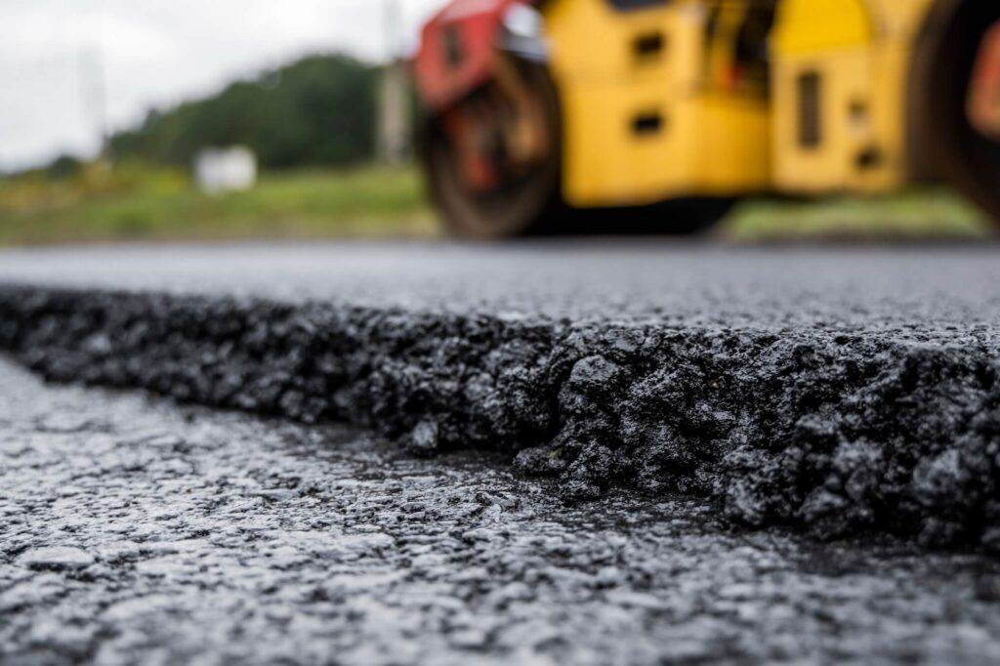

What We Do
Valkov manufactures polymer modified asphalt binders and PG paving grades for demanding road, bridge, airport, port, and industrial pavement applications.
See manufacturingOrigin Baltimore Terminals location
Valkov produces PMB and PG paving-grade binders in Baltimore for contractors, public agencies, terminals, and infrastructure teams that need reliable supply, technical support, and certified laboratory control.

Valkov manufactures polymer modified asphalt binders and PG paving grades for demanding road, bridge, airport, port, and industrial pavement applications.
See manufacturingWe support highway contractors, public agencies, asphalt mix producers, terminal operators, commercial paving teams, and infrastructure owners across the Mid-Atlantic.
Plan supplyControlled polymer modification improves elasticity, rutting resistance, recovery, durability, and performance under heavy traffic and seasonal temperature swings.
View PG specificationsHeated transfer from the Baltimore terminal system.
Controlled blending, milling, and circulation.
Batch testing before release and shipment.
Coordinated pickup support for project schedules.
Valkov produces polymer modified asphalt and PG paving-grade binders for contractors, agencies, terminals, and infrastructure teams that need dependable supply from Baltimore. The company combines terminal-based production, technical binder knowledge, and certified laboratory control for demanding paving applications.
Our mission is to help customers build longer-lasting pavement by combining production discipline, certified laboratory analysis, and practical logistics support from the Origin Baltimore Terminals location.

Send product, tonnage, target date, project location, and specification requirements. Valkov can confirm grade fit, availability, documentation, and pickup planning.
Start a request